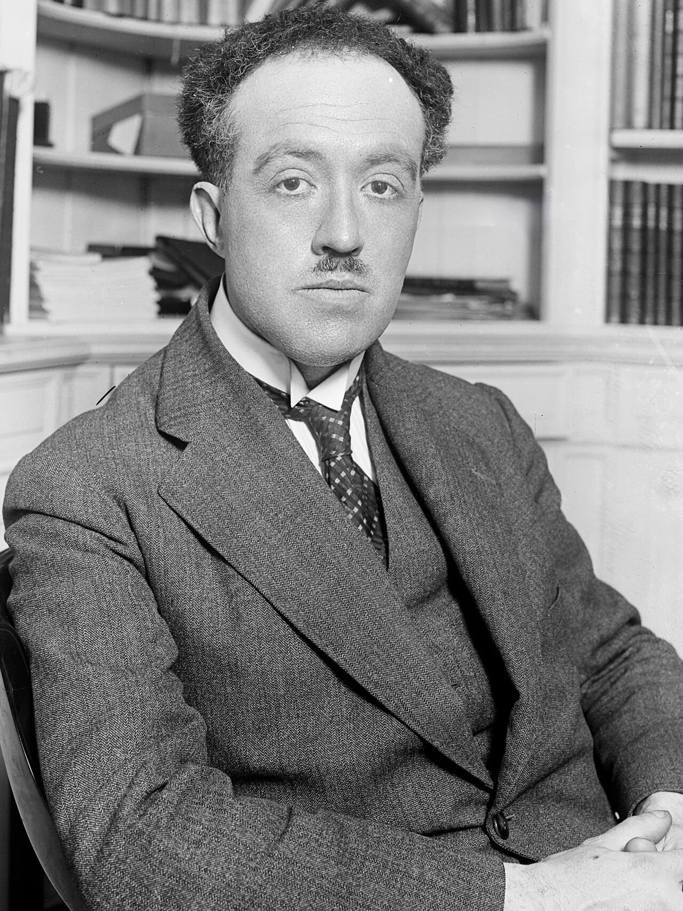
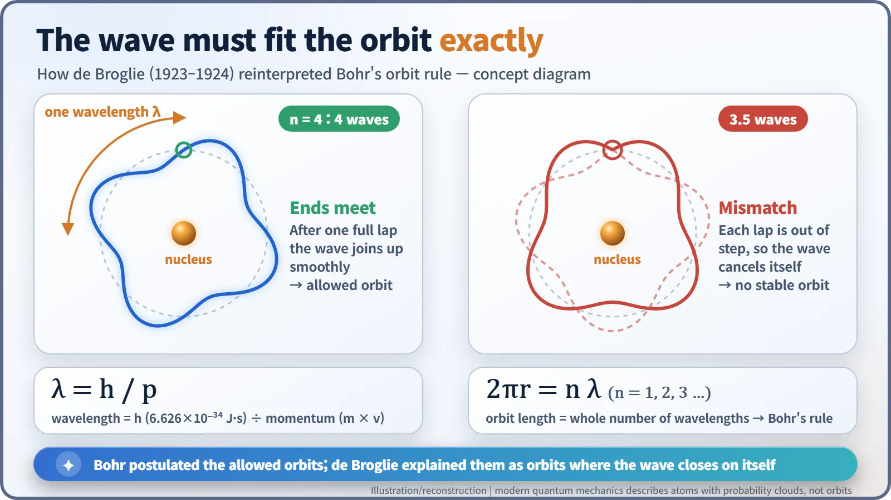
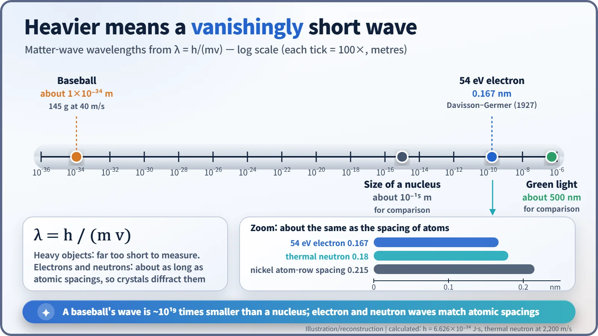
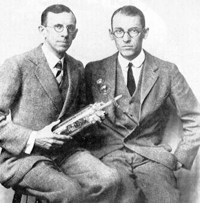

Nuclear History · 035
Lifting a Corner of the Great Veil — de Broglie's Matter Waves (1924)
A former history student argued that every particle has a wavelength, λ = h/p, and three years later a nickel crystal confirmed it.
On 25 November 1924, a 32-year-old former history student, Louis de Broglie, defended a Paris doctoral thesis claiming that electrons, and all matter, behave as waves, with a wavelength λ = h/p. Even his examiners had doubts. Three years later, electrons bouncing off a nickel crystal proved him right, and the idea became a foundation of quantum mechanics and of the physics of neutrons in nuclear reactors.
"A corner of the great veil"
"Louis de Broglie's work has made a great impression on me; he has lifted a corner of the great veil." Albert Einstein wrote that line in Berlin on 16 December 1924, in a letter to the Paris physicist Paul Langevin (1872–1946). (This is our English rendering of the French wording quoted by historians.) [2]
The man being praised was Louis de Broglie (1892–1987), aged 32, who just three weeks earlier, on 25 November 1924, had defended his doctoral thesis at the University of Paris (the Sorbonne). His big claim fits in a sentence: particles of matter, such as electrons, are also waves.
From history student to physicist
De Broglie came from one of France's best-known aristocratic families. He earned a degree in history in 1910, then switched course and took a science degree in 1913. During the First World War he served in the army's wireless section at the radio station on the Eiffel Tower. His older brother Maurice was an experimental physicist working on X-rays, and it was alongside Maurice's laboratory that Louis wrestled with a stubborn question: what is light, really? [7]
Light was leading a double life. Interference and diffraction said light was a wave. But Einstein's light-quantum hypothesis of 1905, and Arthur Compton's 1923 experiments on X-rays bouncing off electrons, said light could also hit things like a stream of particles.

If waves can be particles, can particles be waves?
De Broglie turned the puzzle around. If light, long thought of as a wave, also behaved like particles, perhaps electrons, long thought of as particles, also had a wave side. In autumn 1923 he published three short notes in the proceedings of the Paris Academy of Sciences, the first, "Ondes et quanta" ("Waves and Quanta"), presented on 10 September. His thesis, Recherches sur la théorie des quanta ("Research on the Theory of the Quanta"), set the idea out clearly: [1] [3]
λ = h / p — the wavelength (λ) equals Planck's constant (h) divided by the particle's momentum (p, mass times speed).
With this, he cracked one of the riddles of Niels Bohr's atom. Bohr had simply declared that an electron could circle the nucleus only in certain orbits, without saying why. De Broglie's answer: picture the electron as a wave running around the orbit. When it comes back to its starting point, the wave has to join up neatly with where it began. That only happens if the orbit's circumference holds a whole number of wavelengths (2πr = nλ). Otherwise, lap after lap, the wave falls out of step and cancels itself out. It is a bit like a guitar string, which can only ring at certain notes. De Broglie's condition gives exactly the same orbits as Bohr's rule. [1]

Examiners with doubts
The examining committee consisted of Jean Perrin, Paul Langevin, the mathematician Élie Cartan and the crystallographer Charles Mauguin. Mauguin later admitted that at the time he did not believe the waves attached to particles of matter were physically real. Langevin's report also conceded that the physical nature of the wave remained obscure, yet concluded that "the originality and depth of the ideas" fully justified accepting the work as a doctoral thesis (our translation from the French). [2]
A popular version of the story says Langevin sent the thesis to Einstein and that Einstein's enthusiasm got it through. De Broglie himself remembered it that way. But the Einstein letter that can actually be dated was written three weeks after the defence and reads like the reaction of someone who had just read the work, so at least one historian argues the sequence needs a second look. [2] Another story, often told but resting on later recollection, has Perrin asking at the end of the defence how the waves could ever be detected, and de Broglie suggesting that electrons be fired at a crystal.
Why doesn't a baseball wobble?
If matter is a wave, why don't we see it? Because the wavelength is fantastically short. A 145-gram baseball travelling at 40 metres per second (about 90 mph) has a wavelength of roughly 1×10⁻³⁴ m, about 10¹⁹ times smaller than an atomic nucleus. Electrons, though, are very light. An electron accelerated through 54 volts has a wavelength of 0.167 nanometres, about the same as the spacing between atoms in a crystal. That means a crystal can act as a diffraction grating for electrons.

1927: a nickel crystal answers
Confirmation came from an unexpected direction. At Western Electric in the United States (the forerunner of Bell Labs), Clinton Davisson and Lester Germer were firing electrons at nickel when air leaked into their vacuum apparatus. To clean off the oxidised nickel they heated it, and the surface turned into large crystals. After that, the scattered electrons showed strange peaks. With 54-volt electrons the signal was strongest at an angle of 50 degrees, and the wavelength worked out from it, 0.165 nm, almost matched the 0.167 nm that de Broglie's formula predicted. The result appeared in Nature in the issue of 16 April 1927. [4] [7]

That June, G. P. Thomson in Britain, working with Alexander Reid, sent electrons through a thin film and photographed diffraction rings. [5] There is a neat family twist: his father, J. J. Thomson, had won a Nobel Prize for showing that the electron is a particle, and in 1937 the son shared one with Davisson for showing that electrons behave as waves. De Broglie had already received the 1929 Nobel Prize in Physics "for his discovery of the wave nature of electrons." [6]
The wave inside every reactor
Einstein cited de Broglie in a 1925 paper, and Erwin Schrödinger, who learned of the thesis through that citation, wrote down the equation that matter waves obey in 1926. That became wave mechanics, one of the two founding forms of quantum mechanics. [1] [2] The wave, though, does not mean that matter wiggles along a snaky path. The standard interpretation links it to the probability of finding the particle in a given place. De Broglie himself was never comfortable with that probabilistic reading.
The idea runs straight into nuclear engineering. The thermal neutrons that sustain fission in a reactor travel at about 2,200 m/s and have a wavelength of about 0.18 nm, again close to atomic spacings. Reactor physics, which calculates how likely a neutron is to be absorbed or scattered by a nucleus, rests on this wave description, and research reactors use neutron diffraction to map how atoms are arranged inside materials. The corner of the veil that a young aristocrat lifted in Paris leads all the way to the reactor design office.